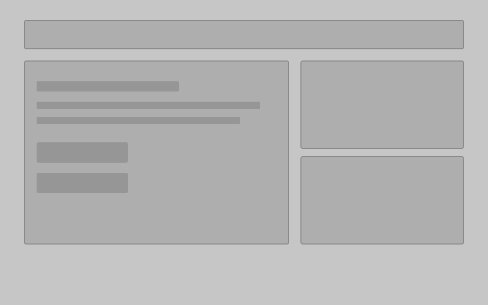

Community Cultural In-Between Quiz
A reflective identity quiz about navigating cultural in-betweenness—how identity can shift across language, place, behavior, and belonging. Built as a standalone site and hosted on GitHub Pages from the CC_Community-Quiz repository.
01
Initial grey box

Grey box prototype Final version
Final version
Evolution. The layout began as a neutral grey-box structure for hierarchy and flow, then became the full visual design, copy, and interaction of the live quiz. Add a screenshot named community-quiz-final.jpg in the portfolio folder for the “final version” still (until then the broken-image icon may show).
If the embed below is blocked or empty, open the live quiz on GitHub Pages↗.